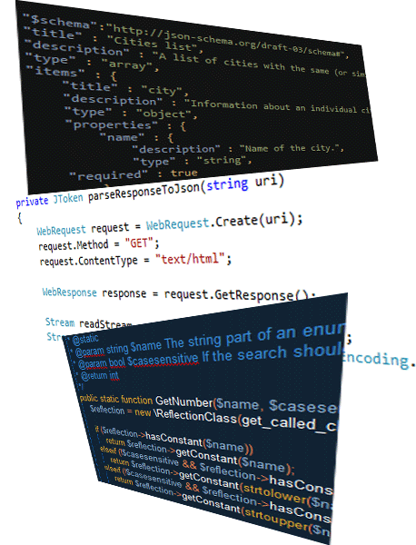
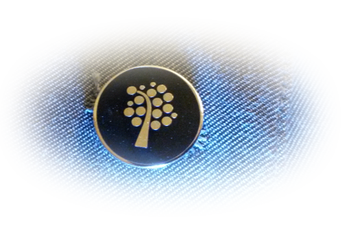

Your browser doesn't support the features required by impress.js, so you are presented with a simplified version of this presentation.
For the best experience please use the latest Chrome, Safari or Firefox browser.
Utvecklare av digitala tjänster och webbprogrammerare.
Utbildningsprogram med möjlighet till kandidatexamen.
Kort om programmen
Utvecklare av digitala tjänster
- Kandidatexamen (3 år)
- Campus (Kalmar)
- Installerbara applikationer
Webbprogrammerare
- Högskoleexamen (2 år)
- Möjlighet till påbyggnadsår för kandidatexamen.
- Campus (Kalmar)
- Distans
- Webbapplikationer
Förkunskapskrav
Utvecklare av digitala tjänster
- Grundläggande behörighet
- Matematik C/Matematik 3b/3c
Gemensamt första år
- Webbtekniker
- Programmering
- Mjukvaruutvecklingsmetodik
- Gränssnittsutveckling
- Databasteknik
- ASP.NET
- Individuellt mjukvaruprojekt

Separata andra år!
Utvecklare av digitala tjänster
- Android utveckling
- Spelutveckling
- 3D-grafik/OpenGL
Webbprogrammerare
- JavaScript (fördjupning)
- ASP.NET
- Single Page Application
- Grupprojekt
- Självständigt fördjupningsarbete
...men lite mer om utvecklingsteori och kodkvalitet gemensamt under år två.
År tre
- Mjukvaruarkitekturer
- Mjukvarutestning
- RIA-utveckling
- Valbara kurser
- Examensarbete

Vilka jobb kan du få efter utbildningen?
Utvecklare av digitala tjänster
Mjukvaruarkitekt
Spelutvecklare
Testare
Systemutvecklare
Webbprogrammerare
Webbutvecklare
e-handelsutveckling
Gränsnittsutvecklare
Sökmotoroptimeringsspecialist